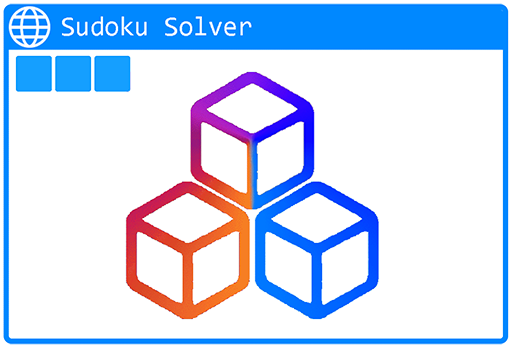
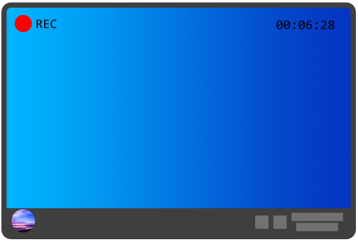

xzx7131
Sudoku Solver
Screen Recorder
xzx7131
A developer's personal website
Sudoku Solver
Screen Recorder
Sudoku Solver

Solve all effective sudoku puzzles
Latest version: 3.1.0
This is a program that can solve sudoku puzzles. Now the online and offline version are all avaliable.
In order to solve another puzzle, and the current puzzle has already been solved, press the "Clear" button. All the value that have been inputed on the screen will be cleaned.
The program will tell you most of the wrong things when solving a puzzle, like 'Invalid grid' 'Wrong input' and other wrong things.
Click the buttons below to try online or get the offline version.
Download
Try online
Screen Recorder

Record your screen with the PyQt5 GUI
Latest version: 2.1.2
This is a screen recorder using PyQt5 on python. Now the latest version is avaliable for download.
In the main window, you can see all the videos that you've recorded and manage them. You can also change the record area, sees the preview on the right, or choose a sound device that you want.
While recording, you can pause any time or stop recording.Then you can see the video.
Click the button below to download.
Download